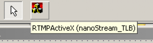

nanoStream Delphi Integration¶
nanoStream plugins are based on ActiveX Controls, which can be used from within any development environment. This document describes how to use the nanoStream plugins from within the Delphi Development IDE.
In a Delphi Project, first Import ActiveX Control under the Component tab

Search for nanoStream Live Video Encoder.

Create a RTMP ActiveX Unit.

On the resulting form, pull an area with the mouse.

Then add a standard button to test nanoStream:

Double Click the button and add this code:
procedure TForm1.Button1Click(Sender: TObject);
begin
RTMPActiveX1.InitEncoder;
RTMPActiveX1.StartPreview;
end;
Run the project. Click on the button. You should see nanoStream running in camera preview mode then. Add Streaming / Broadcasting to a Media Server
RTMPActiveX1.DestinationURL := 'rtmp://example.com/live+delphi123';
RTMPActiveX1.VideoBitrate := 200000;
RTMPActiveX1.StartBroadcast;